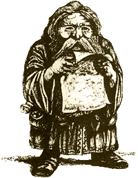

| |
Törpe
tanmesterek
Karrier leírás Warhammer Fantasy
Roleplay-hez.

|
“ Nekünk vannak harcosaink, a törpéknek
óriásölõi. Nekünk tudósaink vannak, a törpéknek
tanmestereik. És ráadásul néha úgy tûnik,
hogy ezen utóbbiak mindenkin túltesznek.” |
|
- Eberhardt Festscrift,
az Altdorfi Egyetem kancellárja |
A tanmesterség egyedülálló intézmény,
a legmagasabb mûveltség fokmérõje a törpék
nemzettségében, alárendelve a tudás gyarapításának
és megõrzésének az utókor számára.
A tanmesterek rendkívüli
megbecsülésnek örvendenek, különösen a törpe
vezetõk szemében, akik nagyra becsülik tudásukat
és bölcsességüket. Minden törpe akadémikusnak
az álma, hogy egyszer a tanok mesterévé válhasson.
Minden törpe településen, függetlenül
annak méretétõl, található legalább egy
tanmester, habár – a többi faj számára érthetetlen
módon – a tanítómesteri rangot gyakran ruházzák
a legkiemelkedõbb törpére a közösségben,
tekintet nélkül arra, hogy valójában tanító-e
az illetõ. Nagyon fontos feladatot töltenek be a
közösség életében, õk felelõsek a krónikák
vezetéséért és a tradíciók betartásáért,
valamint hasznos tanácsaikkal segítik a közösség
vezetõit.
Nem minden tanmester zárkózik el
a világtól a könyvei közé. Általában a
nagyobb törpe közösségek, nem várják el a
tanok mesterétõl, hogy az részt vegyen a
mindennapi kötelességek teljesítésében. Így
a tanok mesterei általában szabadon folytathatják kutatásaikat, vagy
éppen messzi földekre utazhatnak, hogy õsi krónikákban
és rég elfeledett törpe erõsségekben
kutathassák atyáik, az elf és goblin háborúk
alatt elveszített tudását. Habár néhány
tanmester ért a harcmûvészetekhez, és sokan
nagyhatalmú varázslók,
mindegyikük ismeretek széles skálájával
rendelkezik.
A tanok mesterévé csak kézmûves (Artisan),
tudós (Scholar), 4. Szintû alkimista (Alchemist
level 4), 4. Szintû pap (Cleric level 4), vagy 4.
Szintû varászló (Wizard level 4) foglalkozású
karakterek válhatnak. Ezen felül kötelezõen törpének
kell lennie és teljesítenie kell legalább kettõt
a fentebb felsorolt szakmák közül.
Fejlõdési táblázat
| |
M |
Ws |
Bs |
S |
T |
W |
I |
A |
Dex |
Ld |
Int |
Cl |
Wp |
Fel |
| Tanmester |
|
+10 |
+10 |
|
+2 |
+6 |
+40 |
|
+30 |
+30 |
+40 |
+40 |
+40 |
|
Jártasságok
Titkos nyelv – törpe (Arcane Language
– Arcane Dwarf), mágia (Magick), mûvészet
(Art), asztrológia (Astronomy), kémia (Chemistry),
titkosírás (Cryptography), démon tudomány (Daemon
Lore), bányamérnök (Mining Engineer), értékbecslés
(Evaluate), címertan (Heraldy), növénytan (Herb
Lore), történelem (History), mágikus tárgyak
azonosítása (Identify Magical Artifact), élõholtak
azonosítása (Identify Undead), jog (Law),
nyelvtudomány (Linguistics), mágikus ismeretek (Magical
Awareness), mágikus érzékelés (Magical Sense),
éremtan (Numismatics), tájékozódás – föld
alatt (Orientation, underground only), tenyérjóslás
(Palmistry), rúnatan (Rune Lore), tekercs tudomány
(Scroll Lore), egyéb idegen nyelv beszélése –
a játékos választja (Speak Additional Language
– players choice), csapda felfedése (Spot Traps),
matekzseni (Super Numerate), teológia (Theology).
Felszerelés (Trappings)
Nincs meghatározott felszerelése a
tanmester karriernek. Az elõzõ karrierek
felszereléseit tartja meg.
Speciális szabályok
A tanok mesterei rendkívüli tiszteletnek
örvendenek a törpék közt, ezért +2 módosítót
kapnak a vezetés ill. rokonszenv (Ld. &
Fel.)
értékeikre, ha más törpékkel érintkeznek.
Karrier kijáratok (Career exits)
Pap (Cleric)
Varázsló (Wizard)
Tudós (Scholar)
Kézmûves (Artisan)
Új jártasság: Ösztöndíj (Scholarship)
Ez a jártasság teljesen eltér az eddig
megszokottaktól, ugyanis általában újabb jártasságok
felvételére használjuk. Az a
karakter, aki az ösztöndíj jártassággal
rendelkezik, magasan képzett a különbözõ
információk keresésében és ezek elsajátításában.
Ezen felül helytállóbb szakvéleménnyel
szolgálhatnak a különbözõ intellektuális témákban,
mint azok a karakterek, akik nem rendelkeznek
ezzel a jártassággal. A játék nyelvére lefordítva
ez a következõképpen mûködik:
Az a karakter, aki rendelkezik az ösztöndíjjal,
a tudományos jártasságait (tehát azokat,
amiknek a használata Intelligencia-teszthez
kötött) még egyszer felveheti. Amikor a játékos
újra felvesz egy jártasságot, akkor újra a
normál XP értékét köteles kifizetni érte, és
egy jártasság nem vehetõ fel ugyanabból a
karrierbõl kétszer! Az ösztöndíj hatása a halmozáson alapszik, tehát, ha például a
karakternek kétszer van meg a teológia (Theology)
jártasság, és Int-tesztet kell végrehajtania,
ahol a jártasság +10 módosítót ad a dobáshoz,
akkor ezt +20-al teheti meg.
A játékos karakterek ezzel az új jártassággal
ugyancsak kapnak pozitív módosítókat (+10-et)
minden Int illetve I tesztjükre,
amikor írott forrásokból próbálnak meg információt
kinyerni – például mikor egy mágus könyvtárában
fontos dokumentumokat, vagy egy varázsital
receptjét próbálják megtalálni.
fordította: Rince
A cikk az Apocrypha Now
kiegészítõ Dwarf Loremaster címû
fejezete alapján készült
|
|